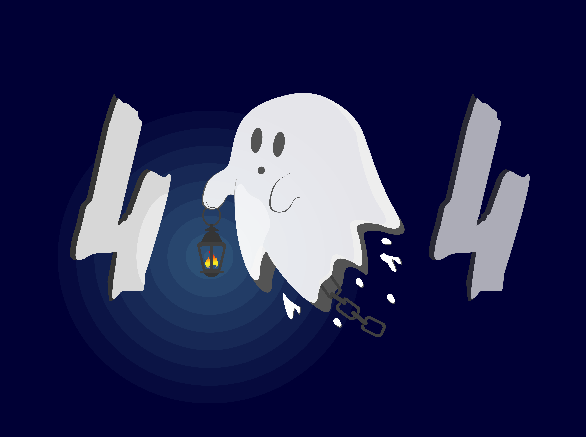

Remaking the a Dog breeding website
The Ghost
This project was part of the "404" project. I saw a cute gosht and decided to create a 404 page around the idea of a ghost looking for something. I first created the illustration using Illustrator and then animated it with After Effect.

The Glass Planet
Illustration created on Illustrator by using a tutorial on Youtube

The Hackathon
This is our class project Hackathon.

Voxam, the Inclusive Podcast plateform
The mystery of the missing sock
This project was part of the "404" project. The idea was to create a 404 page on a theme of our choice. I was inspired by a story one of my classmate told us, the case of the missing sock, to which the ending was that it had been raken by UFO's.I first created the illustration using Illustrator and then animated it with After Effect.